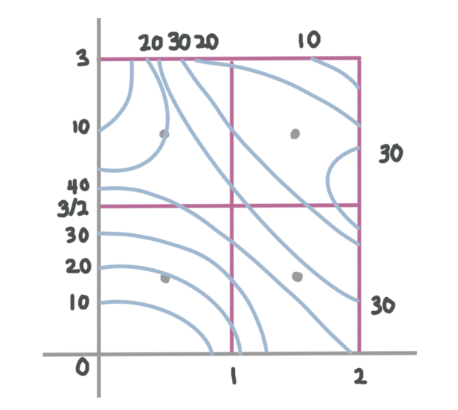
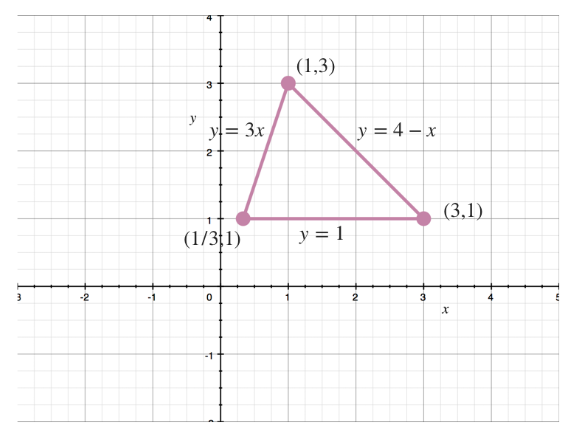
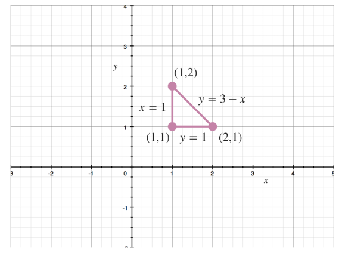
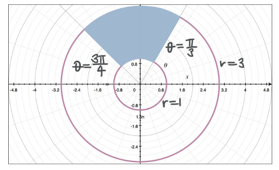
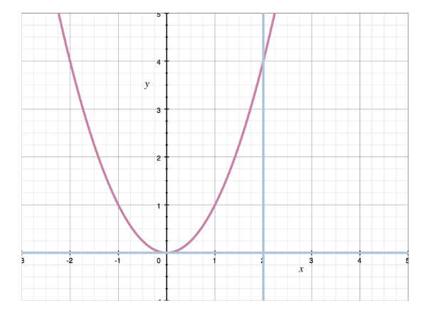

Calculus III, Pt. 3
Multiple Integrals - Approximating Double Integrals
Single variable integrals allow us to find the area $A$ under a single variable function $f(x)$ over the interval $[a,b]$. In contrast, double integrals allow us to find the volume $V$ under a multivariable function $f(x,y)$ over the region $R = [a,b] \times [c,d]$.
Midpoint Rule for Double Integrals
To estimate the area under a single variable function, we would draw rectangles under the curve so that the midpoint at the top of each rectangle touched the graph of the function, then add the area of each rectangle together to find an approximation of the area under the curve.
When we translate this into 3D space, it means that we use 3D rectangular prisms instead of 2D rectangles, to approximate the volume under a multivariable function.
The volume under a multivariable function $f(x,y)$ over the region $R = [a,b] \times [c,d]$ can be approximated using a double Riemann sum with midpoints.
$\int \int_R f(x,y) dA \approx \sum_{i=1}^m \sum_{j=1}^n f(\bar{x_i}, \bar{y_j}) ~\Delta A$
The larger the values of $m$ and $n$, the more accurate the approximation. $\Delta A$ is the area of the base of one prism in the same way the $\Delta x$ was the width of one rectangle when using single-variable functions.
Example:
Use the midpoint rule to approximate the volume under the curve for:
$f(x,y) = x + y^2 + 2$
$R = [0,2] \times [0,4]$
$m = n = 2$
If we plug the values we've been given into the midpoint rule formula, we get:
$\int \int_R f(x,y) dA \approx \sum_{i=1}^m \sum_{j=1}^n f(\bar{x_i}, \bar{y_j}) \Delta A$
$\int_0^4 \int_0^2 x + y^2 + 2 ~dx ~dy \approx \sum_{i=1}^4 \sum_{j=1}^4 f(\bar{x_i}, \bar{y_j}) \Delta A$
Notice the double integral on the left side of the equation. We turned it into an iterated integral, where we integrate with respect to one variable at a time, by attaching the x-interval to the inside integral and the y-interval to the outside integral. Since we put the limits of integration for $x$ on the inside interval, that means we have to put $dx$ on the inside before $dy$, which comes second since the limits of integration for $y$ are on the outside integral.
We'll need to define the rectangle $R$, then divide it into smaller rectangles based on $m$ and $n$, and find the midpoint of each rectangle so that we can plug the midpoints into our function $f(x,y) = x + y^2 + 2$, then plug the sum of the reuslts into the approximation formula for $f(\bar{x_i},\bar{y_j})$.
The rectangle $R = [0,2] \times [0,4]$ means that we want to integrate over the x-interval $[0,2]$ and over the y-interval $[0,4]$.
The midpoints of the four smaller rectangles are:
$\left( \frac{1}{2},1 \right) \left( \frac{3}{2},1 \right) \left( \frac{1}{2},3 \right) \left( \frac{3}{2},3 \right)$
We need $\Delta A$, the area of the smaller rectangles. Since the dimensions of the smaller rectangles are $1 \times 2$,
$\Delta A = (1)(2)$
$\Delta A = 2$
Plugging each midpoint into the original function $f(x,y) = x + y^2 + 2$ and summing the results, we get:
$\left[ \frac{1}{2} + (1)^2 + 2 \right] + \left[ \frac{3}{2} + (1)^2 + 2 \right] + \left[ \frac{1}{2} + (3)^2 2 \right] + \left[ \frac{3}{2} + (3)^2 + 2 \right]$
We want to plug this sum into the approximation formula, and also plug in $\Delta A = 2$.
$ \int_0^4 \int_0^2 x + y^2 + 2 ~dx ~dy \approx \left[ \left( \frac{1}{2} + (1)^2 + 2 \right) + \left( \frac{3}{2} + (1)^2 + 2 \right) + \left( \frac{1}{2} + (3)^2 + 2 \right) + \left( \frac{3}{2} + (3)^2 + 2 \right) \right] (2) $
$ = \left[ \left( \frac{1}{2} + 1 + 2 \right) + \left( \frac{3}{2} + 1 + 2 \right) + \left( \frac{1}{2} + 9 + 2 \right) + \left( \frac{3}{2} + 9 + 2 \right) \right] (2) $
$ = \left[ \left( \frac{1}{2} + 3 \right) + \left( \frac{3}{2} + 3 \right) + \left( \frac{1}{2} + 11 \right) + \left( \frac{3}{2} + 11 \right) \right] (2) $
$ = \left[ \left( \frac{1}{2} + 3 \cdot \frac{2}{2} \right) + \left( \frac{3}{2} + 3 \cdot \frac{2}{2} \right) + \left( \frac{1}{2} + 11 \cdot \frac{2}{2} \right) + \left( \frac{3}{2} + 11 \cdot \frac{2}{2} \right) \right] (2) $
$ = \left[ \left( \frac{1}{2} + \frac{6}{2} \right) + \left( \frac{3}{2} + \frac{6}{2} \right) + \left( \frac{1}{2} + \frac{22}{2} \right) + \left( \frac{3}{2} + \frac{22}{2} \right) \right] (2) $
$ = \left[ \left( \frac{7}{2} \right) + \left( \frac{9}{2} \right) + \left( \frac{23}{2} \right) + \left( \frac{25}{2} \right) \right] (2) $
$= \frac{64}{2}(2) = 64$
The volume under the function is approximately $64$ cubic units.
Multiple Integrals - Double Integrals
Average Value
We can estimate the average value of a region of level curves by using the formula:
$f_{ave} = \frac{1}{A(R)} \int \int_R f(x,y) \Delta A$
where $A(R)$ is the area of the rectangle defined by $R = [x_1, x_2] \times [y_1, y_2]$, and where the double integral gives the voume under the surface $f(x,y)$ over the region $R$.
Example:
Use the sketch of level curves to estimate the region's average value where $m=n=2$ and $R = [0,2] \times [0,3]$.

We start by solving for $A(R)$, the total area of the region $R$.
$A(R) = (2)(3) = 6$
Next, we solve for $\Delta A$, which is the area of the subrectangles.
$\Delta A = (1) \left( \frac{3}{2} \right) = \frac{3}{2}$
Next we need the midpoints of each subrectangle. Using $R = [0,2] \times [0,3]$, $m=n=2$ and our diagram, we can see that the midpoints of the 4 smaller rectangles are:
$ \left( \frac{1}{2}, \frac{3}{4} \right), \left( \frac{3}{2}, \frac{3}{4} \right), \left( \frac{1}{2}, \frac{9}{4} \right), \left( \frac{3}{2}, \frac{9}{4} \right) $
Since we don't have an equation for our function, we can use the diagram of its level curves to estimate the functions' values at each midpoint.
At $\left( \frac{1}{2}, \frac{3}{4} \right)$, the function is approximately $19$.
At $\left( \frac{3}{2}, \frac{3}{4} \right)$, the function is approximately $35$.
At $\left( \frac{1}{2}, \frac{9}{4} \right)$, the function is approximately $20$.
At $\left( \frac{3}{2}, \frac{9}{4} \right)$, the function is approximately $26$.
Now we have everything we need to find an estimate for the function's average value over the region.
$f_{ave} = \frac{1}{A(R)} [ \Delta A ( f(x_1,y_1) + f(x_2,y_2) + f(x_3,y_3) + f(x_4,y_4) ]$
$f_{ave} = \frac{1}{6} \left[ \frac{3}{2} (19 + 35 + 20 + 26) \right]$
$f_{ave} = \frac{1}{6} \left[ \frac{3}{2}(100) \right]$
$f_{ave} = \frac{300}{12}$
$f_{ave} = 25$
Iterated and Double Integrals
A double integral has no explicitly defined limits of integration. Instead the interval is some region $R$, like:
$\int \int_R f(x,y) dA$
An iterated integral is one in which limits of integration have been clearly defined for each variable, like:
$\int_0^4 \int_0^2 x + y^2 ~dx ~dy$
Given a double integral, we want to turn it into an iterated integral, because with iterated integrals, we can easily evaluate one integral at a time.
Working from the inside out, we'll integrate first with respect to $x$, treating $y$ as a constant, and we'll integrate over the x-interval $[0,2]$, then integrate with respect to $y$ and evaluate over the y-interval $[0,4]$.
Example:
Evaluate the iterated integral:
$\int_0^2 \int_1^3 x^2y^3 - xe^y ~dy ~dx$
$= \int_0^2 x^2 \left( \frac{1}{4}y^4 \right) - x(e^y) \bigg|_{y=1}^{y=3} ~dx$
$= \int_0^2 \frac{x^2y^4}{4} - xe^y \bigg|_{y=1}^{y=3} ~dx$
We've indicated that we're evaluating over the interval $y=1$ to $y=3$.
$\int_0^2 \left[ \frac{x^2(3)^4}{4} - xe^3 \right] - \left[ \frac{x^2(1)^4}{4} - xe^1 \right] ~dx$
$= \int_0^2 \left( \frac{81x^2}{4} - xe^3 \right) - \left( \frac{x^2}{4} - xe^1 \right) ~dx$
$= \int_0^2 \frac{81x^2}{4} - xe^3 - \frac{x^2}{4} + xe ~dx$
$= \int_0^2 \frac{80x^2}{4} - xe^3 + xe ~dx$
$= \int_0^2 20x^2 - xe^3 + xe ~dx$
Now we'll take the integral with respect to $x$.
$\frac{20x^3}{3} - \frac{1}{2}x^2e^3 + \frac{1}{2}x^2e \bigg|_0^2$
$= \frac{20(2)^3}{3} - \frac{1}{2}(2)^2e^3 + \frac{1}{2}(2)^2e - \left[ \frac{20(0)^3}{3} - \frac{1}{2}(0)^2e^3 + \frac{1}{2}(0)^2e \right]$
$= \frac{20(8)}{3} - \frac{}{}(4)e^3 + \frac{1}{2}(4)e - (0 - 0 + 0)$
$= \frac{160}{3} - 2e^3 + 2e$
This is the value of the iterated integral, which means it is the volume under the function $f(x,y) = x^2y^3 - xe^y$ over the region $R = [0,2] \times [1,3]$.
Example:
Evaluate the double integral:
$\int \int_R y ~sin(3x) - y^3 ~cos ~x ~dA$
$R = \{ 0 \le x \le \frac{\pi}{2}, -1 \le y \le 2 \}$
We can insert the $x$ and $y$ intervals to turn this into an iterated integral.
$\int_0^{\frac{\pi}{2}} \int_{-1}^2 y ~sin(3x) - y^3 ~cos ~x ~dy ~dx$
It doesn't matter if we put $dx$ or $dy$ on the inside or outside, but we must ensure the limits of integration on each integral match the order of $dx$ and $dy$. Since we put $dy$ on the inside, we'll integrate first with respect to $y$, treating $x$ as a constant.
$\int_0^{\frac{\pi}{2}} \frac{1}{2} y^2 ~sin(3x) - \frac{1}{4} y^4 ~cos ~x \bigg|_{y=-1}^{y=2} ~dx$
$= \int_0^{\frac{\pi}{2}} \frac{1}{2}(2)^2 ~sin(3x) - \frac{1}{4}(2)^4 ~cos ~z - \left[ \frac{1}{2}(-1)^2 ~sin(3x) - \frac{1}{4}(-1)^4 ~cos ~x \right] ~dx$
$= \int_0^{\frac{\pi}{2}} 2 ~sin(3x) - 4 ~cos ~x - \frac{1}{2} ~sin(3x) + \frac{1}{4} ~cos ~x ~dx$
$= \int_0^{\frac{\pi}{2}} \frac{3}{2} ~sin(3x) - \frac{15}{4} ~cos ~x ~dx$
Next we'll integrate with respect to x, then evaluate over the x-interval.
$- \frac{3}{2} \left( \frac{1}{3} ~cos(3x) - \frac{15}{4} ~sin ~x \bigg|_0^{\frac{\pi}{2}} \right)$
$= - \frac{1}{2} ~cos(3x) - \frac{15}{4} ~sin ~x \bigg|_0^{\frac{\pi}{2}}$
$= - \frac{1}{2} ~cos \frac{3 \pi}{2} - \frac{15}{4} ~sin \frac{\pi}{2} - \left[ - \frac{1}{2} ~cos(3 \cdot 0) - \frac{15}{4} ~sin ~0 \right]$
$= - \frac{1}{2} ~cos \frac{3 \pi}{2} - \frac{15}{4} ~sin \frac{\pi}{2} + \frac{1}{2} ~cos ~0 + \frac{15}{4} ~sin ~0$
$= - \frac{1}{2}(0) - \frac{15}{4}(1) + \frac{1}{2} ~cos ~0 + \frac{15}{4} ~sin ~0$
$= -0 - \frac{15}{4} + \frac{1}{2}(1) + \frac{15}{4}(0)$
$= 0 - \frac{15}{4} + \frac{1}{2} + 0$
$= - \frac{15}{4} + \frac{2}{4}$
$= - \frac{13}{4}$
Type I and II Regions
We know that double integrals can be used to find the volume below a surface over some region $R = [a,b] \times [c,d]$. We can define the region R as type I, type II, or a mix of both. Type I curves are curves that can be defined for $y$ in terms of $x$, and lie (more or less) above and below each other, whereas type II curves lie more or less to the left and right of each other. Type I regions can be broken up into horizontal slices. If a region is considered both type I and type II, it can be evaluated either way.
Example:
Define the following region D as type I or type II, then find volume below the surface over the region $D$.
$\int \int_D x^2 + 6y - 20 ~dA$
where $D$ is the triangle bounded by $y=1$, $y=3x$, and $y=4-x$.
The first thing we'll do is sketch the region $D$, solving for the intersection points of the 3 lines.
For the intersection of $y=1$ and $y=3x$,
$3x = 1$
$x = \frac{1}{3}$
Pairing $x = \frac{1}{3}$ with $y=1$, the intersection point is $\left( \frac{1}{3},1 \right)$
We'll find the intersection of $y=1$ and $y = 4 - x$.
$4 - x = 1$
$-x = -3$
$x = 3$
Pairing $x=3$ with $y=1$, the intersection point is $(3,1)$.
We'll find the intersection of $y=3x$ and $y = 4 - x$.
$3x = 4 - x$
$4x = 4$
$x = 1$
Plugging x=1 into $y=3x$ to see that $y=3$, the intersection point is $(1,3)$.
If we plot these points and sketch the lines that connect them, we see the triangular region $D$.

Now we need to decide if $D$ is a type I or type II region. Since we can get uniform slices either way, we can choose which type to use, and will get the same answer with both methods.
We'll choose type II, in which the equations that define the lines that are edges of region $D$ need to be defined for $x$ in terms of $y$. If we solve each for $x$, we get:
$y = 3x$
$x = \frac{1}{3}y$
and
$y = 4 - x$
$x = 4 - y$
For a type II region, we'll integrate first with respect to $x$, then with respect to $y$. The upper limit of integration for $x$ is given by $x = 4 - y$, because that line defines teh top of each of our horizontal slices, and the lower limit of integration for $x$ is given by $x = \left( \frac{1}{2} \right) y$, because that line defines the bottom of each of our horizontal slices. $y$ is defined between $y=1$ and $y=3$, so the original integral becomes:
$\int \int_D x^2 + 6y - 20 ~dA$
$= \int_1^3 \int_{\frac{y}{3}}^{4-y} x^2 + 6y - 20 ~dx ~dy$
Evaluating from the inside out and therefore integrating with respect to $x$ first, we get:
$= \int_1^3 \frac{1}{3}x^3 + 6xy - 20x \bigg|_{x = \frac{y}{3}}^{x = \frac{4}{y}} ~dy$
$= \int_1^3 \frac{1}{3}(4-y)^3 + 6(4-y)y - 20(4-y) - \left[ \frac{1}{3} \left( \frac{y}{3} \right)^3 + 6 \left( \frac{y}{3} \right)y - 20 \left( \frac{y}{3} \right) \right] ~dy$
$= \int_1^3 \frac{1}{3}(4-y)(4-y)(4-y) + 6y(4-y) - 80 + 20y - \left[ \frac{1}{3} \left( \frac{y^3}{27} \right) + 6y \left( \frac{y}{3} \right) - \frac{20y}{3} \right] ~dy$
$= \int_1^3 \frac{1}{3}(16 - 8y + y^2)(4-y) + 24y - 6y^2 - 80 + 20y - \left( \frac{y^3}{81} + \frac{6y^2}{3} - \frac{20y}{3} \right) ~dy$
$= \int_1^3 \frac{1}{3}(64 - 48y + 12y^2 - y^3) - \frac{1}{81}y^3 - 8y^2 + 44y + \frac{20}{3}y - 80 ~dy$
$= \int_1^3 \frac{64}{3} - 16y + 4y^2 - \frac{1}{3}y^3 - \frac{1}{81}y^3 - 8y^2 + \frac{132}{3}y + \frac{20}{3}y - 80 ~dy$
$= \int_1^3 - \frac{1}{3}y^3 - \frac{1}{81}y^3 + 4y^2 - 8y^2 - 16y + \frac{132}{3}y + \frac{20}{3}y + \frac{64}{3} - 80 ~dy$
$= \int_1^3 - \frac{27}{81}y^3 - \frac{1}{81}y^3 - 4y^2 - \frac{48}{3}y + \frac{132}{3}y + \frac{20}{3}y + \frac{64}{3} - \frac{240}{3} ~dy$
$= \int_1^3 - \frac{28}{81}y^3 - 4y^2 + \frac{104}{3}y - \frac{176}{3} ~dy$
Integrating with respect to $y$, we get:
$= - \frac{28}{81} \left( \frac{1}{4} \right)y^4 - 4 \left( \frac{1}{3} \right)y^3 + \frac{104}{3} \left( \frac{1}{2} \right)y^2 - \frac{176}{3}y \bigg|_1^3$
$= - \frac{28}{324}y^4 - \frac{4}{3}y^3 + \frac{104}{6}y^2 - \frac{176}{3}y \bigg|_1^3$
$= - \frac{7}{81}y^4 - \frac{4}{3}y^3 + \frac{52}{3}y^2 - \frac{176}{3}y \bigg|_1^3$
$= - \frac{7}{81}(3)^4 - \frac{4}{3}(3)^3 + \frac{52}{3}(3)^2 - \frac{176}{3}(3) - \left[ - \frac{7}{81}(1)^4 - \frac{4}{3}(1)^3 + \frac{52}{3}(1)^2 - \frac{176}{3}(1) \right]$
$= - \frac{7}{81}(81) - \frac{4}{3}(27) + \frac{52}{3}(9) - \frac{176}{3}(3) + \frac{7}{81} + \frac{4}{3} - \frac{52}{3} + \frac{176}{3}$
$= - \frac{7}{1}(1) - \frac{4}{1}(9) + \frac{52}{1}(3) - \frac{176}{1}(1) + \frac{7}{81} + \frac{4}{3} - \frac{52}{3} + \frac{176}{3}$
$= -7 - 36 + 156 - 176 + \frac{7}{81} + \frac{128}{3}$
$= -63 + \frac{7}{81} + \frac{128}{3}$
$= - \frac{5103}{81} + \frac{7}{81} + \frac{3456}{81}$
$= - \frac{1640}{81}$
We can say that the volume under the curve $z = x^2 + 6y - 20$ over the region $D$ is $- \frac{1640}{81}$.
The fact that the voume is negative means that there is more volume enclosed by the curve and the xy-plane that lies below the xy-plane than there is that lies above the xy-plane.
Finding Surface Area
Most often with these kinds of surface area problems, we'll be asked to find the surface area of the part of function $A$ that lies inside function $B$. When this is the case, we'll think about the function that's inside as the primary function, and the function that's outside as the secondary function.
To find the surface area of the primary, multivariable function, we can use the formula:
$A(s) = \int \int_D \sqrt{ 1 + \left( \frac{\partial z}{\partial x} \right) + \left( \frac{\partial z}{\partial y} \right)^2 } ~dA$
where $D$ represents the secondary function and $\partial z / \partial x$ and $\partial z / \partial y$ are partial derivatives of the primary function. Whether we integrate first with respect to $x$ or to $y$ depends on the object $D$.
Example:
Find the surface area of the part of $z=xy$ that lies inside of $x^2 + y^2 = 4$.
Because we want to find the surface area of the part of $z=xy$ that's inside $x^2 + y^2 = 4$, we'll call $z=xy$ the primary function and $x^2 + y^2 = 4$ the secondary function.
Then we'll find first-order derivatives of the primary function, $z=xy$.
$\frac{\partial z}{\partial x} = y$
$\frac{\partial z}{\partial y} = x$
We need to determine whether the region we are interested in is type I or type II. Since the region is defined by $x^2 + y^2 = 4$, this is a circle, and we can treat the region as type I.
We'll choose to integrate first with respect to $y$ and then $x$, which means that so far, the integral looks like:
$A(s) = \int \int_D \sqrt{ 1 + y^2 + x^2 } ~dy ~dx$
The limits of integration will come from $x^2 + y^2 = 4$. Solving this equation for $y$ in terms of $x$, in order to get the limits of integration with respect to $y$, gives:
$x^2 + y^2 = 4$
$y^2 = 4 - x^2$
$y = \pm \sqrt{4-x^2}$
After integrating with respect to $y$, we need to have $x$ variables left over so that we can integrate with respect to $x$. Now the integral is:
$A(s) = \int \int_{- \sqrt{4-x^2}}^{\sqrt{4-x^2}} \sqrt{1 + y^2 + x^2} ~dy ~dx$
Next we can solve for the limits of integration with respect to $x$. Since we're looking for the surface area inside the circle with radius $2$, we know that $x$ is defined over the interval $[-2,2]$. So the integral becomes:
$A(s) = \int_{-2}^2 \int_{- \sqrt{4-x^2}}^{\sqrt{4-x^2}} \sqrt{1 + y^2 + x^2} ~dy ~dx$
We can now work on solving the integral. The easiest way to solve it will be converting to polar form. We know that $r^2 = x^2 + y^2$ and that $dy ~dx = r ~dr ~\theta$. Making these substitutions gives:
$A(s) = \int_{x=-2}^{x=2} \int_{y = -\sqrt{4-x^2}}^{y=\sqrt{4-x^2}} \sqrt{1+r^2} ~r ~dr ~\theta$
Next we need to change the limits of integration back into polar form. The limits on the inner integral need to match $dr$, which means they have to be with respect to $r$. Since dealing with a circle with radius $2$ (centered at the origin), $r$ is defined over $[0,2]$. So,
$A(s) = \int_{x=-2}^{x=2} \int_0^2 \sqrt{1+r^2} ~r ~dr ~d \theta$
The limits on the outer integral need to match $d \theta$, which means they must be with respect to $\theta$. Since we're dealing with the circle centered at the origin with radius $2$, $\theta$ is defined over $[0, 2 \pi]$. So,
$A(s) = \int_0^{2 \pi} \int_0^2 \sqrt{1+r^2} ~r ~dr ~d \theta$
To evaluate the resulting integral, we'll use a u-substitution with:
$u = 1+r^2$
$du = 2r ~dr$
$dr = \frac{du}{dr}$
Making these substitutions into the double integral gives:
$A(s) = \int_{\theta = 0}^{\theta = 2 \pi} \int_{r=0}^{r=2} \sqrt{u} ~r \left( \frac{du}{2r} \right) ~d \theta$
$A(s) = \int_{\theta = 0}^{\theta = 2 \pi} \int_{r=0}^{r=2} \frac{1}{2} \sqrt{u} ~du ~d \theta$
$A(s) = \int_{\theta = 0}^{\theta = 2 \pi} \int_{r=0}^{r=2} \frac{1}{2} u^{\frac{1}{2}} ~du ~d \theta$
Integrate with respect to $u$.
$A(s) = \int_{\theta=0}^{\theta = 2 \pi}\frac{1}{3}u^{\frac{3}{2}} \bigg|_{r=0}^{r=2} ~d \theta$
Now we can substitute back in for $u$ using $u = 1 + r^2$.
$A(s) = \int_0^{2 \pi} \frac{1}{3} (1 + r^2)^{\frac{3}{2}} \bigg|_{r=0}^{r=2} ~d \theta$
Evaluate the inner integral.
$A(s) = \int_0^{2 \pi} \frac{1}{3} \left[ (1+2)^{\frac{3}{2}} - (1-0^2)^{\frac{3}{2}} \right] ~d \theta$
$A(s) = \int_0^{2 \pi} \frac{1}{3} (5^{\frac{3}{s}} - 1^{\frac{3}{2}}) ~d \theta$
$A(s) = \frac{\sqrt{125}}{3} \theta - \frac{1}{3} \theta \bigg|_0^{2 \pi}$
Evaluate the outer integral.
$A(s) = \left( \frac{\sqrt{125}}{3} (2 \pi) - \frac{1}{3}(2 \pi) \right) - \left( \frac{\sqrt{125}}{3}(0) - \frac{1}{3}(0) \right)$
$A(s) = \frac{2 \pi \sqrt{125}}{3} - \frac{2 \pi}{3}$
$A(s) = \frac{2 \pi \sqrt{125} - 2 \pi}{3}$
$A(s) = \frac{2 \pi}{3} (\sqrt{125} - 1)$
$A(s) = \frac{2 \pi}{3}(5 \sqrt{5} - 1)$
This is the surface area of the part of $z=xy$ that lies inside $x^2 + y^2 = 4$.
Finding Volume
We use the double integral formula,
$V = \int \int_D f(x,y) ~dA$
to find volume, where $D$ represents the region over which we are integrating, and $f(x,y)$ is the curve below which we want to find volume. We need to turn the double integral into an iterated integral by finding the limits of integration for $x$ and $y$.
Example:
Find volume below the following function over the region $D$.
$z = 2xy$, where $D$ is the triangle bounded by the lines $y=1$, $x=1$, and $y = 3 - x$.
The first thing we'll do is sketch the region $D$. It will be easy if we solve for the intersection points of the 3 lines.
Pairing $x=1$ with $y=1$, we find the point $(1,1)$.
We'll find the intersection of $y=1$ and $y = 3 - x$.
$3 - x = 1$
$-x = -2$
$x = 2$
Pairing $x=2$ with $y=1$, the intersection point is $(2,1)$.
We'll find the intersection of x=1 and $y = 3 - x$.
$y = 3 - x$
$y = 3 - 1$
$y = 2$
Pairing $x=1$ with $y=2$, the intersection point is $(1,2)$.

Since we only have one complex equation, $y = 3 - x$ and its solved for $y$, we'll integrate with respect to $y$ first, which means we'll treat this as a type I integral, and so the inner integral will have limits of integration for $y$.
If we divide the triangular region $D$ into vertical slices, the tops of those slices are defined by the line $y = 3 - x$, and the bottoms are defined by $y=1$. Looking at the sketch of region $D$, we can see that $x$ is defined on $[1,2]$.
$V = \int \int_D f(x,y) ~dA$
$V = \int_1^2 \int_1^{3-x} 2xy ~dy ~dx$
We'll integrate first with respect to $y$.
$V = \int_1^2 xy^2 \bigg|_{y=1}^{y=3-x} ~dx$
$V = \int_1^2 x (9 - 6x + x^2) - x ~dx$
$V = \int_1^2 9x - 6x^2 + x^3 - x ~dx$
$V = \int_1^2 8x - 6x^2 + x^3 ~dx$
Then we'll integrate with respect to $x$.
$V = 4x^2 - 2x^3 + \frac{1}{4}x^4 \bigg|_1^2$
$V = 4(2)^2 - 2(2)^3 + \frac{1}{4}(2)^4 - \left[ 4(1)^2 - 2(1)^3 + \frac{1}{4}(1)^4 \right]$
$V = 16 - 16 + 4 - \left( 4 - 2 + \frac{1}{4} \right)$
$V = 2 - \frac{1}{4}$
$V = \frac{7}{4}$
The volume under the curve $z = 2xy$ over the region $D$ is $\frac{7}{4}$.
Multiple Integrals - Double Integrals in Polar Coordinates
In this section, we'll look at how to evaluate double integrals that are given to us in terms of polar coordinates $(r, \theta)$ instead of rectangular coordinates $(x,y)$.
When we convert from one set of coordinates from another, we'll need to address the function itself, the bounds on the integrals, and also the differential.
Changing Iterated and Double Integrals to Polar Coordinates
To change an iterated integral to polar coordinates, we'll need to convert the function itself, the limits of integration, and the differential. To change the function and limits of integration from rectangular coordinates to polar coordinates, and will use the conversion formulas:
$x = r ~cos ~\theta$
$y = r ~sin ~\theta$
$r^2 = x^2 + y^2$
When we convert $dA$ or $dy$ to polar coordinates, it converts as:
$dA = dy ~dx = r ~dr ~d \theta$
If we start a double integral, we'll need to first evaluate it, select which region type it is, and then set up our limits of integration. After this, our double integral is an iterated integral, so we just use the same techniques to solve for the polar coordinates.
Example:
Convert the following double integral from rectangular coordinates to polar coordinates.
$\int \int_D cos(x^2 + y^2) ~dA$
$D$ is bounded by $y \pm \sqrt{25-x^2}$
First we'll need to convert our double integral into an iterated integral. The first step in this is to evaluate $D$ to determine what region type it is. If we rearrange $D$, we'll get $x^2 + y^2 = 25$, which means the region is a circle we can treat as a type I region.
This means our outer integral will be with respect to $x$ and our inner integral will be with respect to $y$. We have been given $y = \pm \sqrt{25-x^2}$, which we can put into our integral.
$\int \int_{-\sqrt{25-x^2}}^{\sqrt{25-x^2}} cos(x^2 + y^2) ~dy ~dx$
Since our function is a circle with radius $5$, our limits will be $\pm 5$.
$\int_{-5}^5 \int_{-\sqrt{25-x^2}}^{\sqrt{25-x^2}} cos(r^2) ~r ~dr ~d \theta$
Next we need to change the limits of integration into polar form. We can start with the inner integral which is with respect to $r$. The lowest value $r$ can have is $0$ and the highest value $r$ can have is the radius of the circle, which is $5$.
$\int_{-5}^5 \int_0^5 cos(r^2) ~r ~dr ~d \theta$
Now, we can change the limits of our outer integral. The outer integral is now with respect to $\theta$. Since our function is a circle, the lowest angle it can have is $0$ and the highest angle it can have is $2 \pi$. We can place these into our integral.
$\int_0^2 \int_0^5 ~r ~cos(r^2) ~dr ~d \theta$
This is the same double integral we started with expect we converted it from rectangular to polar coordinates.
Sketching Area
To sketch the area of integration of a double polar integral, you need to analyze the function and evaluate both sets of limits separately. You'll need to sketch the polar function on polar coordinate axes, where the $r$ values represent the radius of a circle and the $\theta$ values will produce straight lines.
Example:
Sketch the area given by the double polar integral:
$\int_{\frac{\pi}{3}}^{\frac{3 \pi}{4}} \int_1^3 ~r ~dr ~d \theta$
Let's look first at our inner integral. These are the limits with respect to $r$ which means that on a polar graph these limits are simply the radius of two separate circles. This means our function exists in the space between the two circles. The inner circle has a radius of $1$ and the outer circle has a radius of $3$.
Next we can analyze the outer integral. These limits are with respect to $\theta$. On a polar graph, the angular points can be represented by straight lines from the origin.
Looking at our integral, we can see that we'll have one line going through $\frac{\pi}{3}$ and the second line going through $\frac{3 \pi}{4}$. This means our area of integration is bounded by the two circles and two lines. The graph of the area looks like:

Finding Area
You can use a double integral to find the area inside a polar curve. Assuming the function itself and the limits of integration are already in polar form, you can evaluate the iterated integral directly. Otherwise, you'll need to convert to polar form first.
If you don't have the limits of integration, often the best way to find them is to sketch the function so that you can identify the intervals for r and \theta over which the function is defined.
Example:
Find the area given by the double polar integral:
$\int_0^{\frac{\pi}{2}} \int_1^3 ~r ~dr ~d \theta$
$\int_0^{\frac{\pi}{2}} \frac{1}{2} r^2 \bigg|_1^3 ~d \theta$
$= \int_0^{\frac{\pi}{2}} \frac{1}{2}(3)^2 - \frac{1}{2}(1)^2 ~d \theta$
$= \int_0^{\frac{\pi}{2}} \frac{9}{2} - \frac{1}{2} ~d \theta$
$= \int_0^{\frac{\pi}{2}} \frac{8}{2} ~d \theta$
$= \int_0^{\frac{\pi}{2}} 4 ~d \theta$
Now we'll integrate with respect to \theta.
$4 \theta \bigg|_0^{\frac{\pi}{2}}$
$= 4 \left( \frac{\pi}{2} \right) = 4(0)$
$= 2 \pi$
This is the area defined by the double polar integral.
Finding Volume
To evaluate a double polar integral, we'll need to make sure that both the function and limits of integration are in terms of polar coordinates $(r, \theta)$. To convert from rectangular to polar coordinates, we use the formulas:
$x = r ~cos ~\theta$
$y = r ~sin ~\theta$
$r^2 = x^2 + y^2$
When you convert $dA$ or $dy ~dx$ to polar coordinates, it converts as:
$dA = dy ~dx = r ~dr ~d \theta$
Example:
Use a double polar integral to find the volume of the solid enclosed by the given curves:
$z = \sqrt{x^2 + y^2 + 4}$
$z = 4$
First, we'll convert both functions to polar coordinates and get:
$z = \sqrt{r^2 + 4}$
$z = 4$
Now we want to set the equations equal to each other to get points of intersection, so that we can figure out the limits of integration.
$\sqrt{r^2 + 4} = 4$
$r^2 + 4 = 16$
$r^2 = 12$
$r = \pm \sqrt{12}$
$r = \pm \sqrt{4}\sqrt{3}$
$r = \pm 2 \sqrt{3}$
Since $r$ represents distance from the origin in the polar system, and radius cannot be negative, we change the $-2 \sqrt{3}$ to $0$ and say that the limits integration for $r$ are $0 \le r \le 2 \sqrt{3}$.
Next we can solve for the limits of integration with respect to $\theta$. Since we got $r^2 = 12$, which is the same as $x^2 + y^2 = 12$, we know the region is a circle, which means the limits of integration for $\theta$ will be a full $360^{\circ}$, or $0 \le \theta \le 2 \pi$.
We need to figure out which function is further from the origin (has the inner radius), and which is closer to the origin. If we plug in the upper and lower limits of integration, we get:
$V = \int_0^{2 \pi} \int_0^{2 \sqrt{3}} 4r ~dr ~d \theta - \int_0^{2 \pi} \int_0^{2 \sqrt{3}} ~r \sqrt{r^2 + 4} ~dr ~d \theta$
$u = r^2 + 4$
$du = 2r ~dr$
$dr = \frac{du}{2r}$
$V = \int_0^{2 \pi} 2r^2 \bigg|_{r=0}^{r = 2 \sqrt{3}} ~d \theta - \int_0^{2 \pi} \int_0^{2 \sqrt{3}} ~r \sqrt{u} \left( \frac{du}{2r} \right) ~d \theta$
$V = \int_0^{2 \pi} 2r^2 \bigg|_{r=0}^{r = 2 \sqrt{3}} ~d \theta - \int_0^{2 \pi} \int_0^{2 \sqrt{3}} \frac{1}{2} u^{\frac{1}{2}} ~du ~d \theta$
$V = \int_0^{2 \pi} 2r^2 \bigg|_{r=0}^{r = 2 \sqrt{3}} ~d \theta - \int_0^{2 \pi} \frac{1}{2} \left( \frac{2}{3} \right) u^{\frac{3}{2}} \bigg|_{r=0}^{r = 2 \sqrt{3}}$
$V = \int_0^{2 \pi} 2r^2 \bigg|_{r=0}^{r = 2 \sqrt{3}} ~d \theta - \int_0^{2 \pi} \frac{1}{3}(r^2 + 4)^{\frac{3}{2}} \bigg|_{r=0}^{r = 2 \sqrt{3}} ~d \theta$
$V = \int_0^{2 \pi} 2(2 \sqrt{3})^2 - 2(0)^2 ~d \theta - \int_0^{2 \pi} \frac{1}{3} [ (2 \sqrt{3})^2 + 4 ]^{\frac{3}{2}} - \frac{1}{3} [(0)^2 + 4]^{\frac{3}{2}} ~d \theta$
$V = \int_0^{2 \pi} 2(12) ~d \theta - \int_0^{2 \pi} \frac{1}{3}(12 + 4)^{\frac{3}{2}} - \frac{1}{3}(4)^{\frac{3}{2}} ~d \theta$
$V = \int_0^{2 \pi} 24 ~d \theta - \int_0^{2 \pi} \frac{1}{3}(16)^{\frac{3}{2}} - \frac{1}{3}(4)^{\frac{3}{2}} ~d \theta$
$V = \int_0^{2 \pi} 24 ~d \theta - \int_0^{2 \pi} \frac{1}{3}(64) - \frac{1}{3}(8) ~d \theta$
$V = \int_0^{2 \pi} 24 ~d \theta - \int_0^{2 \pi} \frac{64}{3} - \frac{8}{3} ~d \theta$
$V = \int_0^{2 \pi} 24 ~d \theta - \int_0^{2 \pi} \frac{56}{3} ~d \theta$
Now we'll put the integrals back together.
$V = \int_0^{2 \pi} 24 - \frac{56}{3} ~d \theta$
$V = \int_0^{2 \pi} \frac{72}{3} - \frac{56}{3} ~d \theta$
$V = \int_0^{2 \pi} \frac{16}{3} ~d \theta$
Then we'll integrate with respect to $\theta$.
$V = \frac{16}{3} \theta \bigg|_0^{2 \pi}$
$V = \frac{16}{3}(2 \pi) - \frac{16}{3}(0)$
$V = \frac{32 \pi}{3}$
This is the volume of the solid enclosed by the curves.
Multiple Integrals - Triple Integrals
Iterated and Triple Integrals
In the same way that double integrals could be expressed without bands on the integrals or with bounds on the integrals (called an iterated integrals), we can also express a triple integral with or without bounds. An iterated triple integral might look like:
$\int_0^1 \int_1^3 \int_0^2 x^2y^3 ~dx ~dy ~dz$
Because we always integrate from the inside out, we would integrate first with respect to $x$, then $y$, then $z$, evaluating over the associated interval after each integration.
Example (Bounded\Iterable):
Evaluate the iterated integral:
$\int_0^2 \int_1^3 \int_0^2 x^2 y^3 ~dx ~dy ~dz$
Integrating with respect to $x$, keeping $y$ and $z$ constant, and then evaluating over the interval $[2,0]$ gives:
$\int_0^1 \int_1^3 \left( \frac{1}{3} x^3 y^3 \bigg|_{r=0}^{r=2} \right) ~dy ~dz$
$= \int_0^1 \int_1^3 \left[ \frac{1}{3}(2)^3 y^3 - \frac{1}{3}(0)^3 y^3 \right] ~dy ~dz$
$= \int_0^1 \int_1^3 \frac{8}{3} y^3 ~dy ~dz$
Since $dy$ is next, we have to integrate with respect to $y$ (keeping $z$ constant), and then evaluate over the interval $[1,3]$.
$\int_0^1 \left( \frac{2}{3}y^4 \int_{y=1}^{y=3} \right) ~dz$
$= \int_0^1 \left[ \frac{2}{3}(3)^4 - \frac{2}{3}(1)^4 \right] ~dz$
$= \int_0^1 \left( \frac{162}{3} - \frac{2}{3} \right) ~dz$
$= \int_0^1 \frac{160}{3} ~dz$
Now we must integrate with respect to $z$, and then evaluate over the interval $[0,1]$.
$\frac{160}{3}z |_0^1$
$= \frac{160}{3}(1) - \frac{160}{3}(0)$
$= \frac{160}{3}$
This is the value of the triple integrated integral.
Example (Unbounded):
Evaluate the triple integral if $E$ is the region below $z = x + y - 1$ but above the region bounded by $y = x^2$, $y=0$, and $x=2$.
$\int \int \int_E 7xy^2 ~dV$

Based on this graph, we can see that x is defined on the interval $[0,2]$ and that $y$ is defined on the interval $[0,x^2]$.
Since the volume we're solving for sits on top of the region graphed above in the xy-plane, we know that the lower limit of integration for $z$ is $0$. Since the volume lies under $z=x+y-1$, the upper limit of integration will be $x+y-1$, which means that $z$ is defined on the interval $[0, x+y-1]$.
Generally, we put the most complicated limits of integration on the innermost integral, and the simplest limits of integration on the outermost integral. The limits of integration for z are most complicated; being defined in terms of two variables; the limits of integration for $y$ are defined in terms of one variable, and the limits of integration for $x$ are constants.
$\int \int \int_E 7xy^2 ~dV = \int_0^2 \int_0^{x^2} \int_0^{x+y-1} 7xy^2 ~dz ~dy ~dx$
Now we'll start by integrating with respect to $z$ (holding $x$ and $y$ constant), and then evaluate over the interval for $z$.
$\int_0^2 \int_0^{x^2} \left[ 7x y^2 z \bigg|_{z=0}^{z=x+y-1} \right] ~dy ~dx$
$= \int_0^2 \int_0^{x^2}7x y^2(x+y-1) - 7xy^2(0) ~dy ~dx$
$= \int_0^2 \int_0^{x^2}7y^2 y^2 + 7xy^3 - 7xy^2 ~dy ~dx$
Integrating with respect to $y$ (holding x constant), and then evaluating over the interval for $y$, we get:
$\int_0^2 \left[ \frac{7}{3}x^2y^3 + \frac{7}{4}xy^4 - \frac{7}{3}xy^3 \bigg|_{y=0}^{y=x^2} \right] ~dx$
$= \int_0^2 \frac{7}{3}x^2(x^2)^3 + \frac{7}{4}x(x^2)^4 - \frac{7}{3}x(x^2)^3 - \left[ \frac{7}{3}x^2(0)^3 + \frac{7}{4}x(0)^4 - \frac{7}{3}x(0)^3 \right] ~dx$
$= \int_0^2 \frac{7}{3}x^2 + \frac{7}{4}x(x^8) - \frac{7}{3}x(x^6) ~dx$
$= \int_0^2 \frac{7}{3}x^8 + \frac{7}{4}x^9 - \frac{7}{3}x^7 ~dx$
Finally, integrating with respect to $x$ and then evaluating over the interval for $x$, we get:
$\frac{7}{27}x^9 + \frac{7}{40}x^{10} - \frac{7}{24}x^8 \bigg|_0^2$
$= \frac{7}{27}(2)^9 + \frac{7}{40}(2)^{10} - \frac{7}{24}x^8 - \left[ \frac{7}{27}(0)^9 + \frac{7}{40}(0)^{10} - \frac{7}{24}(0)^8 \right]$
$= \frac{7}{27}(512) + \frac{7}{40}(1024) - \frac{7}{24}(256)$
$= 7(256) \left[ \frac{1}{27}(2) + \frac{1}{40}(4) - \frac{1}{24} \right]$
$= 1792 \left( \frac{2}{27} + \frac{1}{10} - \frac{1}{24} \right)$
$= 1792 \left[ \frac{2}{27} \left( \frac{80}{80} \right) + \frac{1}{10} \left( \frac{216}{216} \right) - \frac{1}{24} \left( \frac{90}{90} \right) \right]$
$= 1792 \left( \frac{160}{2160} + \frac{216}{2160} - \frac{90}{2160} \right)$
$= 1792 \left( \frac{286}{2160} \right)$
$= 1792 \left( \frac{143}{1080} \right)$
$= 896 \left( \frac{143}{540} \right)$
$= \frac{128128}{540}$
$= \frac{32032}{135}$
Average Value
To find the average value of a function over some object $E$, we'll use the formula:
$f_{avg} = \frac{1}{V(E)} \int \int \int_E f(x,y,z) ~dV$
where $V(E)$ is the value of the object $E$.
To use the formula, we'll have to find the volume of the object, plus the domain of $x$, $y$, and $z$ so that we can set limits of integration, turn the triple integral into an iterated integral, and replace $dV$ with $~dx ~dy ~dz$.
Example:
Find the average value of the following function over a cube with side length $2$, lying in the first octant with one corner at the origin $(0,0,0)$ and three sides lying in the coordinate plane.
$f(x,y,z) = 3xyz^2$
Since we are dealing with a cube with side length $2$, the volume will be:
$V(E) = (2)(2)(2) = 8$
To find the limits of integration, we have to look at the object we've been given. In this case, a cube whose corner is sitting at the origin $(0,0,0)$. Since the cube has side length $2$, the limits of integration are $x = [0,2]$, $y = [0,2]$ and $z = [0,2]$.
Plugging everything we have found into the triple integral flrmula for average value, including the function itself, we get:
$f_{avg} = \frac{1}{8} \int_0^2 \int_0^2 \int_0^2 3xyz^2 ~dz ~dy ~dx$
$f_{avg} = \frac{3}{8} \int_0^2 \int_0^2 \int_0^2 xyz^2 ~dz ~dy ~dx$
Integrating with respect to $z$, we get:$
$f_{avg} = \frac{3}{8} \int_0^2 \int_0^2 \frac{1}{3} xyz^3 \bigg|_{z=0}^{z=2}$
$f_{avg} = \frac{1}{8} \int_0^2 \int_0^2 xyz^3 \bigg|_{z=0}^{z=2} ~dy ~dx$
$f_{avg} = \frac{1}{8} \int_0^2 \int_0^2 xy(2)^3 - xy(0)^3 ~dy ~dx$
$f_{avg} = \frac{1}{8} \int_0^2 \int_0^2 8xy ~dy ~dx$
Now we'll integrate with respect to $y$.
$f_{avg} = \frac{1}{8} \int_0^2 8 \left( \frac{1}{2} \right) xy^2 \bigg|_{y=0}^{y=2} ~dx$
$f_{avg} = \frac{1}{2} \int_0^2 xy^2 \bigg|_{y=0}^{y=2} ~dx$
$f_{avg} = \frac{1}{2} \int_0^2 x(2)^2 - x(0)^2 ~dx$
$f_{avg} = \frac{1}{2} \int_0^2 4x ~dx$
Finally we'll integrate with respect to $x$.
$f_{avg} = \frac{1}{2} \left( \frac{4}{2} x^2 \right) \bigg|_0^2$
$f_{avg} = x^2 \bigg|_0^2$
$f_{avg} = (2)^2 - (0)^2$
$f_{avg} = 4$
The average value of the function $f(x,y,z) = 3xyz^2$ over the cube $E$ is $4$.
Finding Volume
We can use triple integrals to find out the volume of a solid 3D object.
$V = \int \int \int_E f(x,y,z) ~dV$
where $E$ represents the solid object. We'll replace $dV$ with $dx$, $dy$, and $dz$.
If we choose to integrate first with respect to $z$, then $y$, then $x$, our voume integral will look like:
$V = \int \int \int_E f(x,y,z) ~dz ~dy ~dx$
Integrating $z$ first, that means we want our limits of integration for $z$ to be in terms of $x$ and $y$, or constants. Since we wont' have integrated yet with respect to $x$ when we do the integration for $y$, we want out limits of integration for $y$ to be in terms of $x$, or constants. Finally, when integrating for $x$, we want to limits of integration for $x$ to be constants.
Example:
Use a triple integral to find the volume of the tetrahedron enclosed by $3x + 2y + 2 = 6$ and the coordinate planes. Since the tetrahedron rests on the coordinate planes, the lower limit of integration for $x$, $y$, and $z$ will be $0$.
To find the upper limit of integration for x (a constant), we'll set $y=0$ and $z=0$ in $3x + 2y + z = 6$, and then solve for $x$.
$3x + 2y + z = 6$
$3x + 2(0) + 0 = 6$
$3x = 6$
$x = 2$
This means the limits of integration for $x$ are $[0,2]$.
To find the upper limit of integration for $y$ (in terms of $x$), we'll set $z=0$ and rearrange $3x + 2y + z = 6$ so that it's solved for $y$ in terms of $x$.
$3x + 2y + z = 6$
$3x + 2y + 0 = 6$
$3x + 2y = 6$
$2y = 6 - 3x$
$y = 3 - \frac{3}{2}x$
The limits of integration for $y$ are $[0, 3 - \frac{3}{2}x]$.
To find the upper limit of integration for $z$ (in terms of $x$ and $y$), we'll solve $3x + 2y + z = 6$ for $z$.
$3x + 2y + z = 6$
$z = 6 - 3x - 2y$
The limits of integration for $z$ are $[0, 6 - 3x - 2y]$.
Plugging everything into the triple integral, we get:
$V = \int_0^2 \int_0^{3 - \frac{3}{2}x} \int{0}^{6 - 3x - 2y} ` ~dz ~dy ~dx$
Since we're finding the volume of the shape and our limits of integration are in terms of the shape, the function we are integrating will simply be $f(x,y,z)$.
We'll integrate first with respect to $z$:
$V = \int_0^2 \int_0^{3-\frac{3}{2}x} z \bigg|_{z=0}^{z = 6 - 3x - 2y} ~dy ~dx$
$V = \int_0^2 \int_0^{3-\frac{3}{2}x} 6 - 3x - 2y - 0 ~dy ~dx$
$V = \int_0^2 \int_0^{3-\frac{3}{2}x} 6 - 3x - 2y ~dy ~dx$
Now we'll integrate with respect to $y$.
$V = \int_0^2 6y - 3xy - y^2 \bigg|_{y=0}^{y = 3 - \frac{3}{2}x} ~dx$
$V = \int_0^2 6 \left( 3 - \frac{3}{2}x \right) - 3x \left( 3 - \frac{3}{2}x \right) - \left( 3 - \frac{3}{2}x \right) - [6(0) - 3x(0) - (0)^2] ~dx$
$V = \int_0^2 18 - 9x - 9x + \frac{px^2}{2} - \left( 9 - 9x + \frac{9x^2}{4} \right) ~dx$
$V = \int_0^2 18 - 9x - 9x + \frac{9x^2}{2} - 9 + 9x - \frac{9x^2}{4} ~dx$
$V = \int_0^2 9 - 9x + \frac{18x^2}{4} - \frac{9x^2}{4} ~dx$
$V = \int_0^2 9 - 9x + \frac{18x^2}{4} - \frac{9x^2}{4} ~dx$
$V = \int_0^2 9 - 9x + \frac{9x^2}{4} ~dx$
Now we'll integrate with respect to $x$.
$V = 9x - \frac{9}{2}x^2 + \frac{9x^3}{4(3)} \bigg|_0^2$
$V = 9x - \frac{9x^2}{2} + \frac{3x^3}{4} \bigg|_0^2$
$V = 9(2) - \frac{9(2)^2}{2} + \frac{3(2)^3}{4} - \left[ 9(0) - \frac{9)0)^2}{2} + \frac{3(0)^3}{4} \right]$
$V = 18 - \frac{36}{2} + \frac{24}{4}$
$V = 18 - 18 + 6$
$V = 6$
The volume of the solid is $6$ cubic units.
Multiple Integrals - Triple Integrals in Cylindrical Coordinates
Cylindrical coordinates are like polar coordinates, but are expressed in 3D space, and given as $(r, \theta, z)$. $r$ is the distance of $(r, \theta, 0)$ from the origin, $\theta$ is the angle between $r$ and the positive direction of the x-axis, and $z$ is the distance of $(r, \theta, 0)$ from the origin along the z-axis.
To convert between cylindrical and rectangular coordinates, we'll use:
$x = r ~cos ~\theta$
$y = r ~sin ~\theta$
$z = z$
Example:
Convert the rectangular point $(1,1,1)$ to cylindrical coordinates.
We'll plus $(1,1,1)$ into the conversion formulas to get:
$x = r ~cos ~\theta$
$1 = r ~cos ~\theta$
$r = \frac{1}{cos ~\theta}$
and
$y = r ~sin ~\theta$
$1 = r ~sin ~\theta$
$r = \frac{1}{sin ~\theta}$
and
$z = z$
$1 = z$
We have two equations both defined for $r$, so we can set them equal to each other.
$\frac{1}{cos ~\theta} = \frac{1}{sin ~\theta}$
$cos ~\theta = sin ~\theta$
$\theta = \frac{\pi}{4}, \frac{5 \pi}{4}$
Since we found two values for $\theta$, we'll have two cylindrical points that can represent the given rectangular point.
For $\theta = \pi / 4$:
$r = \frac{1}{cos ~\frac{\pi}{4}}$
$r = \frac{1}{\sqrt{2} / 2}$
$r = \frac{2}{sqrt{2}}$
$r = \sqrt{2}$
For $\theta = \frac{5 \pi}{4}$:
$r = \frac{1}{cos \left( \frac{5 \pi}{4} \right)}$
$r = \frac{1}{-\sqrt{2} / 2}$
$r = - \frac{2}{\sqrt{2}}$
$r = - \sqrt{2}$
So the rectangular point $(1,1,1)$ is equivalent to the cylindrical points:
$(\sqrt{2}, \frac{\pi}{4}, 1)$
$(- \sqrt{2}, \frac{5 \pi}{4}, 1)$
Changing Triple Integrals to Cylindrical Coordinates
To change a triple integral like:
$\int \int \int_B f(x,y,z) ~dV$
into cylindrical coordinates, we'll need to convert the limits of integration, the function itself, and $dV$ from rectangular coordinates $(x,y,z)$ to cylindrical coordinates $(r, \theta, z)$, using:
$x = r ~cos ~\theta$
$y = r ~sin ~\theta$
$z = z$
and
$r^2 = x^2 + y^2$
To convert the limits of integration and the function $f(x,y,z)$, $dV$ will be converted using the formula:
$dV = r ~dz ~dr ~d \theta$
Example:
Evaluate the following triple integral in cylindrical coordinates.
$\int_{-3}^3 \int_{- \sqrt{9 - y^2}}^{\sqrt{9 - y^2}} \int_{\sqrt{x^2 + y^2}}^3 dz ~dz ~dx ~dy$
We'll start by converting the limits of integration from rectangular to cylindrical coordinates, starting with the innermost integral; these will be the limits of integration for $z$. The upper limit $3$ can stay the same since $z=z$ when we convert, but the lower limit must be converted usign the conversion formulas:
$z = \sqrt{x^2 + y^2}$
$z = \sqrt{ [r ~cos ~\theta]^2 + [r ~sin ~\theta]^2 }$
$z = \sqrt{ r^2 ~cos^2 \theta + r^2 ~sin^2 \theta }$
$z = \sqrt{ r^2 (cos^2 \theta + sin^2 \theta) }$
Using the trigonometric identity $sin^2x + cos^2x = 1$, we can simplify to:
$z = \sqrt{r^2(1)}$
$z = r$
This means the limits of integration with respect to $z$ in cylindrical coordinates are $[r,3]$.
Next we'll do the limits of integration for the middle integral. These will be the limits of integration for $x$, which means they need to be solved for $r$ once we get them to cylindrical coordinates.
The lower limit is given by:
$x = - \sqrt{9-y^2}$
$r ~cos ~\theta = - \sqrt{9 - (r ~sin ~\theta)^2}$
$r^2 ~cos^2 ~\theta = 9 - r^2 ~sin^2 \theta$
$r^2 ~sin^2 \theta + r ~cos^2 \theta = 9$
Since $sin^2x + cos^2x = 1$,
$r^2(1) = 9$
$r = \pm 3$
The upper limit is given by:
$x = \sqrt{9-y^2}$
$r ~cos ~\theta = \sqrt{9 - r ~sin ~\theta)^2}$
$r^2 ~cos^2 \theta = 9 - r^2 ~sin^2 \theta$
$r^2 sin^2 \theta + r^2 ~cos^2 \theta = 9$
$r^2 ~sin^2 \theta + r^2 ~cos^2 \theta = 9$
$r^2(sin^2 \theta + cos^2 \theta) = 9$
Since $sin^2x + cos^2x = 1$,
$r^2(1) = 9$
$r = \pm 3$
It looks like the limits of integration for $r$ in cylindrical coordinates will be given by $[-3,3]$. However, $r$ represents the radius, or distance from the origin, and it doesn't make sense to say that we are $-3$ units from the origin. Instead, we say that the lower bound is $0$.
Finally, we'll do the limits of integration for the outer integral. These will be the limits of integration for $y$, which means they need to be solved for $\theta$ once we get them to cylindrical coordinates. But since we're going to $\theta$, we can assume that the interval is $[0, 2 \pi]$, because that represents the full set of values for $\theta$, which is just the angle between any point and the positive direction on the x-axis.
Next we'll use the conversion formulas.
$xz = r ~cos ~\theta ~z$
$xz = rz ~cos ~\theta$
Putting all of this, plus $dV = r ~dz ~dr ~d \theta$ into the integral gives:
$\int_{-3}^3 \int_{- \sqrt{9-y^2}}^{\sqrt9-y^2} \int_{x^2 + y^2}^3 ~xz ~dz ~dx ~dy$
$= \int_0^{2 \pi} \int_0^3 \int_r^3 r^z ~cos ~\theta (r ~dz ~dr ~d \theta)$
$= \int_0^{2 \pi} \int_0^3 \int_r^3 r^z ~cos ~\theta ~dz ~dr ~d \theta$
Integrating from the inside out, we'll start with $z$, treating all other variables as constants.
Now we'll integrate with respect to $r$, treating all other variables as constants.
$\int_0^{2 \pi} \frac{9}{2(3)} r^3 ~cos \theta - \frac{1}{2(5)} r^5 ~cos ~\theta \bigg|_{r=0}^{r=3} ~d \theta$
$= \int_0^{2 \pi} \frac{3}{2} r^3 ~cos \theta - \frac{1}{10} r^5 ~cos ~\theta \bigg|_{r=0}^{r=3} ~d \theta$
$= \int_0^{2 \pi} \frac{3}{2}(3)^3 ~cos ~\theta - \frac{1}{10} r^5 ~cos ~\theta - \left[ \frac{3}{2}(0)^3 ~cos ~\theta - \frac{1}{10}(0)^5 ~cos ~\theta \right] ~d \theta$
$= \int_0^{2 \pi} \frac{81}{2} ~cos ~\theta - \frac{243}{10} ~cos ~\theta ~d \theta$
$= \int_0^{2 \pi} \frac{162}{10} ~cos ~\theta ~d \theta$
$= \int_0^{2 \pi} \frac{81}{5} ~cos ~\theta ~d \theta$
Now we'll integrate with respect to $\theta$.
$\frac{81}{5} ~sin ~\theta \bigg|_0^{2 \pi}$
$= \frac{81}{5} ~sin(2 \pi) - \frac{81}{5} ~sin (0)$
$= \frac{81}{5}(0) - \frac{81}{5}(0)$
$= 0$
The volume given by this triple integral is $0$.
Finding Volume
We can use triple integrals and cylindrical coordinates to solve for the volume of a solid cylinder. The volume formula in rectangular coordinates is:
$V = \int \int \int_B f(x,y,z) ~dV$
where $B$ represents the solid cylinder and $dV$ can be defined in cylindrical coordinates as:
$dV = r ~dz ~dr ~d \theta$
Example:
Use cylindrical coordinates to find the volume of the triple integral, where $E$ is the solid that lies within the cylinder $x^2 + y^2 = 4$, above the plane $z=0$ and below the cone $z^2 = 9x^2 + 9y^2$.
$\int \int \int_E 3x^2 ~dV$
First, we'll convert the function we were given into cylindrical coordinates using the conversion formulas.
$3x^2$
$= 3(r ~cos ~\theta)^2$
$= 3r^2 ~cos^2 \theta$
Replacing the original function with this one, we get:
$\int \int \int_E 3r^2 ~cos^2 \theta ~dV$
Substituting for $dV$, the integral becomes:
$\int \int \int_E 3r^2 ~cos^2 \theta (r ~dz ~dr ~d \theta)$
$= \int \int \int_E 3r^2 ~cos^2 \theta ~dz ~dr ~d \theta$
Now we need to find the limits of integration. We've been told that we're interested in the solid that lies inside the cylinder $x^2 + y^2 = 4$. If we convert this to cylindrical coordinates using $r^2 = x^2 + y^2$, we get:
$r^2 = 4$
$r = 2$
Since $r$ represents radius, and radius can only be positive, we can say that the limits of integration for $v$ are $[0,2]$, and therefore:
$\int \int_0^2 \int 3r^3 ~cos^2 \theta ~dz ~dr ~d \theta$
We've also been told that the solid lies above the plane $z=0$, and since no conversion is required for $z$, we can leave this as is. We also know that the solid lies below $z^2 = 9x^2 + 9y^2$. We'll factor out $9$ and get $z^2 = 9(x^2 + y^2)$. Using $r^2 = x^2 + y^2$ to convert this to cylindrical coordinates, we get:
$z = 9(x^2 + y^2)$
$z^2 = 9(r^2)$
$z^2 = 9r^2$
$\sqrt{z^2} = \sqrt{9r^2}$
$z = 3r^2$
We can say the limits of integration for $z$ are $[0,3r]$, and therefore:
$\int \int_0^2 \int_0^3r 3r^3 ~cos^2 \theta ~dz ~dr ~d \theta$
For all full cylinders, the limits of integration for $\theta$ will be $[0, 2 \pi]$, therefore:
$\int_0^{2 \pi} \int_0^2 \int_0^{3r} 3r^3 ~cos^2 \theta ~dz ~dr ~d \theta$
We integrate inside out, so with respect to $z$ first, treating all other variables as constants.
$\int_0^{2 \pi} \int_0^2 3r^3 z ~cos^2 \theta \bigg|_{z=0}^{z=3r} ~dr ~d \theta$
$= \int_0^{2 \pi} \int_0^2 9r^4 ~cos^2 \theta ~dr ~d \theta$
Now we'll integrate with respect to $r$, treating all other variables as constants.
$\int_0^{2 \pi} 9 \left( \frac{1}{5} \right) r^5 ~cos^2 \theta \bigg|_{r=0}^{r=2} ~d \theta$
$= \int_{0}^{2 \pi} \frac{9}{5} r^5 ~cos^2 \theta \bigg|_{r=0}^{r=2} ~d \theta$
$= \int_{0}^{2 \pi} \frac{9}{5}(2)^5 ~cos^2 \theta - \frac{9}{5}(0)^5 ~cos^2 \theta ~d \theta$
$= \int_{0}^{2 \pi} \frac{288}{5} ~cos^2 \theta ~d \theta$
We'll make a substitution using the trigonometric identity:
$cos^2 \theta = \frac{1}{2} [1 + cos(2 \theta)]$
So the integral becomes:
$\int_0^{2 \pi} \frac{288}{5} \biggl\{ \frac{1}{2} [1 + cos(2 \theta)] \biggr\} ~d \theta$
$= \int_0^{2 \pi} \frac{144}{5} + \frac{144}{5} ~cos(2 \theta) ~d \theta$
$= \frac{144}{5} \theta + \frac{144}{5(2)} ~sin(2 \theta) \bigg|_0^{2 \pi}$
$= \frac{144}{5} \theta + \frac{72}{5} ~sin(2 \theta) \bigg|_0^{2 \pi}$
$= \frac{144}{5}(2 \pi) + \frac{72}{5} ~sin[2(2 \pi)] - \left[ \frac{144}{5}(0) + \frac{72}{5} ~sin[2(0)] \right]$
$= \frac{144}{5}(2 \pi) + \frac{72}{5} ~sin(4 \pi) - \frac{72}{5} ~sin ~0$
$= \frac{288 \pi}{5} + \frac{72}{5}(0) - \frac{72}{5}(0)$
$= \frac{288 \pi}{5}$
Multiple Integrals - Triple Integrals in Spherical Coordinates
Spherical coordinates are given in terms of $(\rho, \theta, \phi)$, where $\rho$ is the distance from the origin directly to the point, $\theta$ is the angle between the point and the positive direction of the x-axis, and $\phi$ is the angle between the point and the positive direction of the z-axis.
Spherical Coordinates
To convert between spherical coordinates and rectangular coordinates, we will need to use the formulas:
$x = \rho ~sin ~\phi ~cos ~\theta$
$y = \rho ~sin ~\phi ~sin ~\theta$
$z = \rho ~cos ~\phi$
and
$\rho^2 = x^2 + y^2 + z^2$
Example:
Convert the rectangular point $(0,0,1)$ to a spherical coordinate point.
We'll start by plugging $(0,0,1)$ into $\rho^2 = x^2 + y^2 + z^2$.
$\rho^2 = 0^2 + 0^2 + 1^2$
$\rho^2 = 1$
Since $\rho \le 0$, $\rho = 1$.
We'll plug $(0,0,1)$ and $\rho=1$ into $z = \rho ~cos ~\phi$ to solve for $\phi$.
$z = \rho ~cos ~\phi$
$1 = (1) ~cos ~\phi$
$cos ~\phi = 1$
$\phi - 0, 2 \pi$
Since $0 \le \phi \le \pi$, $\phi = 0$.
We'll plug $(0,0,1)$, $\rho=1$ and $\phi=0$ into $y = \rho ~sin ~\phi ~sin ~\theta$ to solve for $\theta$.
$y = \rho ~sin ~\phi ~sin ~\theta$
$0 = (1) ~sin(0) ~sin ~\theta$
$0 = (1)(0) ~sin ~\theta$
Since we have $0$ on the right-hand side, $\theta$ could be any value and the equation would still be true. This makes sense, since the given point is on the z-axis, and $\theta$ is the angle between $r$ and the positive direction of hte x-axis. Since it can be any value, let's choose $0$. Putting these values together, we can say that the spherical coordinate $(1,0,0)$ is the same as the rectangular coordinate $(0,0,1)$.
Example:
Convert the spherical coordinate point $(1, \pi, \frac{\pi}{2})$ to a rectangular coordinate point.
We know that:
$\rho = 1$
$\phi = \frac{\pi}{2}$
$\theta = \pi$
Plugging these into the conversion formulas, we get:
$x = \rho ~sin ~\phi ~cos ~\theta$
$x = (1) ~sin \frac{\pi}{2} ~cos ~\theta$
$x = (1)(1)(-1)$
$x = -1$
and
$y = \rho ~sin ~\phi ~sin ~\theta]$
$y = (1) ~sin \frac{\pi}{2} ~sin ~\pi$
$y = (1)(1)(0)$
$y = 0$
and
$z = \rho ~cos ~\phi$
$z = (1) ~cos \frac{\pi}{2}$
$z = (1)(0)$
$z = 0$
The rectangular coordinate $(-1,0,0)$ is the same as the spherical coordinate $(1, \pi, \frac{\pi}{2})$.
Finding Volume
Example:
Use spherical coordinates to find the volume of the following triple integral, where $B$ is a sphere with center $(0,0,0)$ and radius $4$.
$\int \int \int_B x^2 + y^2 + z^2 ~dV$
Using the conversion formula $\rho^2 = x^2 + y^2 + z^2$, we can change the function into spherical notation.
$\int \int \int_B x^2 + y^2 + z^2 ~dV \int \int \int_B \rho^2 ~dV$
Then we'll use $dV = \rho^2 ~sin ~\phi ~d \rho ~d \theta ~d \phi$ to make a substitution for $dV$.
$\int \int \int_B \rho^2(\rho^2 ~sin ~\phi ~d \rho ~d \theta ~d \phi)$
$\int \int \int_B \rho^4 ~sin ~\phi ~d \rho ~d \theta ~d \phi$
Now we'll find limits of integration. We already know the limits of integration for $\phi$ and $\theta$, since they are always the same if dealing with a full sphere.
$\int_0^{\pi} \int_0^{2 \pi} \int \rho^4 ~sin ~\phi ~d \rho ~d \theta ~d \phi$
$\rho$ defines the radius of the sphere, and we're told this sphere has its center at $(0,0,0)$ and radius $4$. $\rho$ is defined in $[0,4]$.
$\int_0^{\pi} \int_0^{2 \pi} \int_0^4 \rho^4 ~sin ~\phi ~d \rho ~d \theta ~d \phi$
We integrate inside-out, so we'll integrate with respect to $\rho$ first, treating all other variables as constants.
$V = \int_0^{\pi} \int_0^{\phi} \frac{1}{5} \rho^5 ~sin ~\phi \bigg|_{\rho=0}^{\rho=4} ~d \theta ~d \phi$
$V = \int_0^{\pi} \int_0^{\phi} \frac{1}{5}(4)^5 ~sin ~\phi - \frac{1}{5}(0)^5 ~sin ~\phi ~d \theta ~d \phi$
$V = \int_0^{\pi} \int_0^{\phi} \frac{1024}{5} ~sin ~\phi ~d \theta ~d \phi$
Now we'll integrate with respect to $\theta$, treating all other variables as constants.
$V = \frac{1024}{5} \int_0^{\pi} \theta ~sin ~\phi \bigg|_{\theta=0}^{\theta = 2 \pi} ~d \phi$
$V = \frac{2048 \pi}{5} \int_0^{\pi} ~sin ~\phi ~d \phi$
Finally, we'll integrate with respect to $\phi$.
$V = \frac{2048 \pi}{5} (- cos ~\phi) \bigg|_0^{\pi}$
$V = - \frac{2048 \pi ~cos ~\phi}{5} \bigg|_0^{\pi}$
$V = - \frac{2048 \pi}{5} ~cos ~\pi - \left[ - \frac{2048 \pi}{5} ~cos ~0 \right]$
$V = - \frac{2048 \pi}{5}(-1) + \frac{2048 \pi}{5}(1)$
$V = \frac{2048 \pi}{5} + \frac{2048}{5}$
$V = \frac{4096 \pi}{5}$
This is the volume bounded beneath the surface $x^2 + y^2 + z^2$ and above the sphere defined by $B$.
Multiple Integrals - Change of Variables
We use a change of variables to convert an equation from one set of coordinate points to another set of coordinate points. This can be helpful because sometimes we might be given an equation that's defined in terms of the uv-plane, and we want to transfer the equation to the xy-plane.
Jacobian for Two Variables
Given a region defined in the uv-plane, we can use a Jacobian transformation to redefine it in the xy-plane, or vice versa.
Given two equations, $x = f(u,v)$ and $y = g(u,v)$, the Jacobian is:
$ \frac{\partial(x,y)}{\partial(u,v)} = \begin{vmatrix} \frac{\partial x}{\partial u} & \frac{\partial x}{\partial y} \\ \frac{\partial y}{\partial u} & \frac{\partial y}{\partial r} \\ \end{vmatrix} = \frac{\partial x}{\partial u} \cdot \frac{\partial y}{\partial r} - \frac{\partial y}{\partial r} \cdot \frac{\partial y}{\partial u} $
Example:
Find the Jacobian of:
$x = uv$
$y = 2u - v^2$
Our functions tell us we have a $2 \times 2$ set up, so we'll use the formula:
$\frac{\partial(x,y)}{\partial(u,v)} = \frac{\partial x}{\partial u} \cdot \frac{\partial y}{\partial v} - \frac{\partial x}{\partial y} \cdot \frac{\partial y}{\partial u}$
We need to start by finding the partial derivatives at $x$ and $y$ with respect to both $u$ and $v$.
$\frac{\partial x}{\partial u} = v$
$\frac{\partial x}{\partial v} = u$
and
$\frac{\partial y}{\partial u} = 2$
$\frac{\partial y}{\partial v} = -2y$
We'll plug the partial derivatives into our formula and get:
$\frac{\partial(x,y)}{\partial(u,v)} = (v)(-2v) - u(2)$
$\frac{\partial(x,y)}{\partial(u,v)} = -2v^2 - 2u$
This is the Jacobian of the transformation.
Jacobian for Three Variables
Given a region defined for uvw-space, we can use a Jacobian transformation to redefine it in xyz-space, or vice versa.
Given three equations,
$x = f(u,v,w)$
$y = g(u,v,w)$
$z = h(u,v,w)$
the Jacobian is:
$ \frac{\partial(x,y,z)}{\partial(u,v,w)} = \begin{vmatrix} \frac{\partial x}{\partial u} & \frac{\partial x}{\partial v} & \frac{\partial x}{\partial w} \\ \frac{\partial y}{\partial u} & \frac{\partial y}{\partial v} & \frac{\partial y}{\partial w} \\ \frac{\partial z}{\partial u} & \frac{\partial y}{\partial v} & \frac{\partial z}{\partial w} \\ \end{vmatrix} $
$ = \frac{\partial x}{\partial u} \begin{vmatrix} \frac{\partial y}{\partial v} & \frac{\partial y}{\partial w} \\ \frac{\partial z}{\partial v} & \frac{\partial z}{\partial w} \\ \end{vmatrix} - \frac{\partial x}{\partial v} \begin{vmatrix} \frac{\partial y}{\partial u} & \frac{\partial y}{\partial w} \\ \frac{\partial z}{\partial u} & \frac{\partial z}{\partial w} \\ \end{vmatrix} + \frac{\partial x}{\partial w} \begin{vmatrix} \frac{\partial y}{\partial u} & \frac{\partial y}{\partial v} \\ \frac{\partial z}{\partial u} & \frac{\partial z}{\partial v} \\ \end{vmatrix} $
$ = \frac{\partial x}{\partial u} \left( \frac{\partial y}{\partial v} \cdot \frac{\partial z}{\partial w} - \frac{\partial y}{\partial u} \cdot \frac{\partial z}{\partial v} \right) - \frac{\partial x}{\partial v} \left( \frac{\partial y}{\partial u} \cdot \frac{\partial z}{\partial w} - \frac{\partial y}{\partial w} \cdot \frac{\partial z}{\partial u} \right) + \frac{\partial x}{\partial w} \left( \frac{\partial y}{\partial u} \cdot \frac{\partial z}{\partial v} - \frac{\partial y}{\partial v} \cdot \frac{\partial z}{\partial u} \right) $
Example:
Find the Jacobian of the transformation:
$x = uw^2$
$y = v^3 - 3w$
$z = \frac{2uv}{w}$
Our functions tells us we have a $3 \times 3$ setup, so we'll use the formula:
$ \frac{\partial(x,y,z)}{\partial(u,v,w)} = \frac{\partial x}{\partial u} \left( \frac{\partial y}{\partial v} \cdot \frac{\partial z}{\partial w} - \frac{\partial y}{\partial u} \cdot \frac{\partial z}{\partial v} \right) - \frac{\partial x}{\partial v} \left( \frac{\partial y}{\partial u} \cdot \frac{\partial z}{\partial w} - \frac{\partial y}{\partial w} \cdot \frac{\partial z}{\partial u} \right) + \frac{\partial x}{\partial w} \left( \frac{\partial y}{\partial u} \cdot \frac{\partial z}{\partial v} - \frac{\partial y}{\partial v} \cdot \frac{\partial z}{\partial u} \right) $
We need to start by finding the partial derivatives of $x$, $y$, and $z$ with respect to $u$, $v$, and $w$.
$\frac{\partial x}{\partial u} = w^2$
$\frac{\partial x}{\partial v} = 0$
$\frac{\partial x}{\partial w} = 2uw$
and
$\frac{\partial y}{\partial u} = 0$
$\frac{\partial y}{\partial v} = 3v^2$
$\frac{\partial y}{\partial w} = -3$
and
$\frac{\partial z}{\partial u} = \frac{2v}{w}$
$\frac{\partial z}{\partial v} = \frac{2u}{2}$
$\frac{\partial z}{\partial w} = \frac{-2uv}{w^2}$
We'll plug the partial derivatives into the formula and get:
$ \frac{\partial(x,y,z)}{\partial(u,v,w)} = w^2 \left[ 3v^2 \left( - \frac{2uv}{w^2} \right) - (-3) \left( \frac{2u}{w} \right) \right] - 0 \left[ 0 \left( - \frac{2uv}{w^2} \right) - (-3) \left( \frac{2v}{w} \right) \right] + 2uw \left[ 0 \left( \frac{2u}{w} \right) - 3v^2 \left( \frac{2v}{w} \right) \right] $
$\frac{\partial(x,y,z)}{\partial(u,v,w)} = w^2 \left( - \frac{6uv^3}{w^2} + \frac{6u}{w} \right) + 2uw \left( - \frac{6v^3}{2} \right)$
$\frac{\partial(x,y,z)}{\partial(u,v,w)} = - \frac{6uv^3w^2}{w^2} + \frac{6uw^2}{w} - \frac{12uv^3w}{w}$
$\frac{\partial(x,y,z)}{\partial(u,v,w)} = -6uv^3 + 6uw - 12uv^3$
$\frac{\partial(x,y,z)}{\partial(u,v,w)} = -18uv^3 + 6uw$
$\frac{\partial(x,y,z)}{\partial(u,v,w)} = 6uw - 18uv^3$
$\frac{\partial(x,y,z)}{\partial(u,v,w)} = 6u(2 - 3v^3)$
This is the Jacobian of the transformation.
Here is a link to part 4